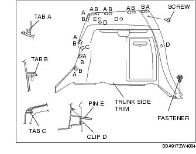

Trunk side trim removal/installation
1. Remove the trunk end trim. (See TRUNK END TRIM REMOVAL/INSTALLATION.)
2. Remove the fastener and screw.
3. Pull the trunk side trim outward, then disengage tabs A, B, C.

4. Pull the trunk side trim outward, then disengage clips D and pin E.
5. Remove the trunk side trim.
6. Install in the reverse order of removal.